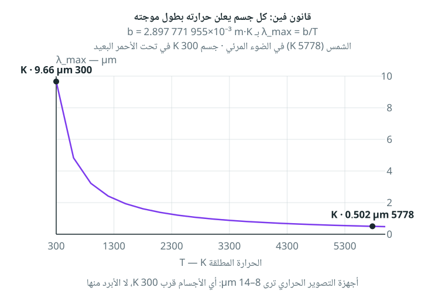

قانون إزاحة فين
Wien displacement law
قانون إزاحة فين يحدد الطول الموجي عند ذروة الإشعاع الحراري لجسم أسود: λ_max·T = b، حيث b = 2.897 771 955×10⁻³ m·K. فكلما سخن الجسم قصر طول موجة ذروته. الشمس عند 5778 K تبعث ذروتها عند 501 nm، وهي في وسط الطيف المرئي.
الطيف الحراري ليس توزيعاً واحداً بل ينتقل مع الحرارة: عند حرارة منخفضة تكون الذروة في الأشعة تحت الحمراء، وعند حرارة أعلى تنتقل إلى الأحمر ثم إلى الأصفر ثم إلى الأزرق. وقانون فين يعطي هذا الانتقال كمياً بعلاقة عكسية بسيطة. ولهذا يبدو الحديد الساخن أحمر ثم أصفر ثم أبيض، ولهذا تُقاس حرارة النجوم من لونها. مثال: جسم عند 300 K له λ_max = 2.8978×10⁻³/300 = 9.66×10⁻⁶ m = 9.66 μm، أي في الأشعة تحت الحمراء البعيدة.
كيف تعمل الظاهرة؟
طيف الجسم الأسود ينتج عن توزيع الطاقة على أنماط الإشعاع في التجويف. وعندما تزيد الحرارة تزيد طاقة كل نمط، لكن الأنماط عالية التردد تزيد أسرع لأنها تحتاج طاقة أكبر لتصبح مأهولة. والنتيجة أن الذروة تنتقل نحو الترددات الأعلى، أي الأطوال الموجية الأقصر. وقانون فين هو موضع الذروة في هذا التوزيع، ويُشتق بتصفير مشتقة قانون بلانك بالنسبة للطول الموجي، فينتج ثابت عددي هو 2.8978×10⁻³ m·K.
العلاقة بالأرقام
λ_max = b/T، وb = hc/(4.965114231·k_B). وللتحقق: 6.62607015×10⁻³⁴×2.99792458×10⁸/(4.965114231×1.380649×10⁻²³) = 2.8978×10⁻³ m·K، مطابق. مثال: مصباح تنجستن عند 2800 K: λ_max = 2.8978×10⁻³/2800 = 1.035×10⁻⁶ m = 1.035 μm، في الأشعة تحت الحمراء، ولهذا يكون مردود الإضاءة أقل من الأمثل.
مفاهيم متقاربة
يُفرَّق بينه وبين ستيفان-بولتزمان: الأول موضع الذروة والثاني الطاقة الكلية. ويُفرَّق بينه وبين بلانك: الأول نتيجة والثاني القانون الكامل. ويُفرَّق بين λ_max وν_max: الأول 2.898×10⁻³/T والثاني 5.879×10¹⁰·T، ولا يتحولان بعلاقة λ = c/ν لأن التوزيع كثافة. وأخيراً يُفرَّد بين الذروة الطيفية والذروة في كثافة الفوتونات، حيث تختلفان بمعامل نحو 1.76.
حدود التطبيق
القانون لا يصف الأجسام الانتقائية حيث تعتمد الانبعاثية على الطول الموجي فتنتقل الذروة الظاهرة. ولا يصف الأوساط المشاركة حيث يعدّل الامتصاص الطيف. ولا يصف الإشعاع في حيّز أصغر من الطول الموجي حيث تتغير كثافة الأنماط. ولا يصف البلازما غير المتوازنة حيث لا يوجد طيف حراري واحد. وأخيراً لا يعطي شدة الإشعاع بل موضع الذروة فقط، فالشدة تحتاج قانون بلانك.

| الكمية | القيمة | المصدر |
|---|---|---|
| ثابت إزاحة فين b | 2.897 771 955×10⁻³ m·K | [1] |
| الطول الموجي لذروة الشمس | 501.5 nm | [1] |
| الطول الموجي لذروة جسم عند 300 K | 9.66 μm | [1] |
المصادر
- 1 CODATA Value: Wien wavelength displacement law constant — NIST — CODATA 2022 recommended values (2024). physics.nist.gov/cgi-bin/cuu/Value?bwien · اطُّلع عليه 2026-11-22
- 2 CODATA Value: Stefan-Boltzmann constant — NIST — CODATA 2022 recommended values (2024). physics.nist.gov/cgi-bin/cuu/Value?sigma · اطُّلع عليه 2026-11-22
- 3 CODATA Value: Planck constant — NIST — CODATA 2022 recommended values (2024). physics.nist.gov/cgi-bin/cuu/Value?h · اطُّلع عليه 2026-11-22
استشهد بهذا المصطلح
الصيغتان مبنيتان من بيانات الصفحة نفسها: العنوان والتاريخ ورابط النسخة المنشورة.
قانون إزاحة فين — Wien displacement law. (2026). ديوان المعرفة — انفراد. https://infiradev.com/diwan/terms/term-wien-displacement.html
@misc{term-wien-displacement2026,
title = {قانون إزاحة فين},
titleaddon = {Wien displacement law},
howpublished = {{ديوان المعرفة — انفراد} — مرجع علمي عربي},
year = {2026},
url = {https://infiradev.com/diwan/terms/term-wien-displacement.html},
urldate = {2026-11-22},
note = {مراجعة علمية: تحرير انفراد الآلي — نُشر بأمر عبدالله الهويدي}
}
راجعه: تحرير انفراد الآلي — نُشر بأمر عبدالله الهويدي · 2026-11-22 · آخر تحديث 2026-11-22